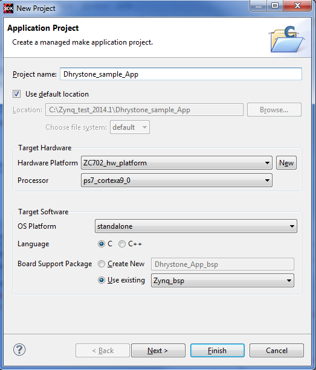
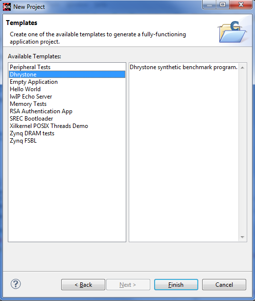

You can create a C or C++ application project by using New Application Project wizard. By default, these are managed make projects - SDK creates and maintains make files for you.
To create a project:
The New Application Project dialog box appears.

In the Project Name field, type a name for the new project.
Select the location for the project. To use the default location as displayed in the Location field, leave the Use default location check box selected. Otherwise, click to unselect the check box, then type or browse to the directory location. The Hardware Platform drop-down list comes with pre defined hardware platforms for ZC702 , ZC706 & ZED hardware. You can use this to start your application on-the-fly, instead of going for any hardware design creation tools. These are specific to PS only part of Zynq®-7000 AP SoC devices.
Select the appropriate target platform from the Hardware Platform drop-down list.
Select Create New from the list to create a new hardware platform project.
From the Processor drop-down lists, select the appropriate target processor.
From the OS Platform drop-down list, select the target OS Platform.
Select the appropriate Language check box (C/C++).
Select the Create New option of Board Support Project to create new board support package project.
Select Use existing to select the existing Board Support Package projects.
Click Next. SDK provides useful sample applications listed in Available Templates that you can use to create your C project. The Description box displays a brief description of the selected sample application. When you use a sample application for your project, SDK creates the required source and header files and linker script.

In the Templates dialog box:
Click Finish to create your application project and board support package (if it does not exist).